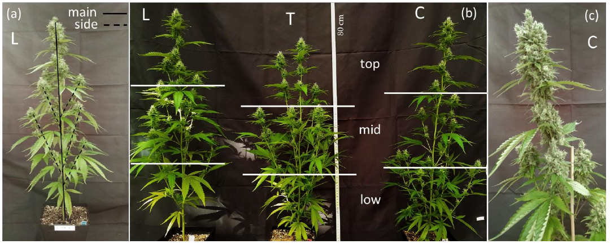
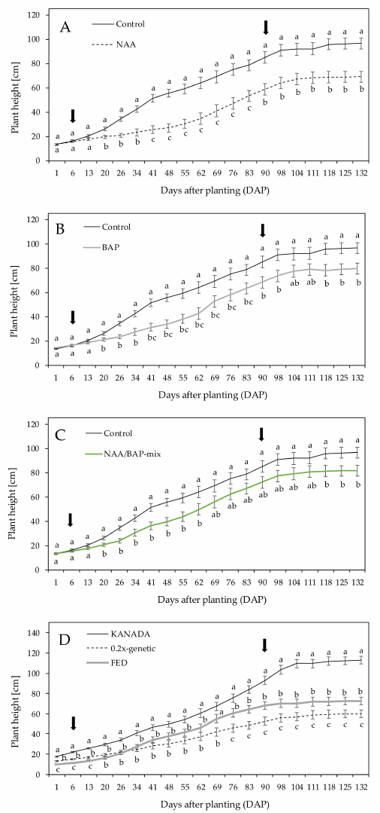

AstraFactory · Evidence review · 12 September 2026
How tall is the plant?
What changes as it grows?
Published height measurements and dated photographs, compared with our current geometry. These studies provide references for CBD-type plants under controlled or greenhouse conditions. They do not establish your partner’s indoor production height.
Finding: the current model’s height and development clock were not fitted to these data. Matching a plausible final height would still leave branching, foliage distribution and the growth sequence unvalidated.
Observed photographSame age, different histories
Real architecture at a documented stage

Crispim Massuela et al. (2022), Figure 1, CC BY 4.0. Panel (b): L, T and C plants at 65 days after planting, five weeks into flowering. L = lower-branch removal, T = topped, C = control. The 80 cm ruler is a scale reference, not a claim that each plant is exactly 80 cm tall. Panel (a) separates plant fractions; panel (c) is a flower closeup at 93 days. Horizontal lines mark sampling regions, not growth stages. DAP starts with rooted-clone planting. Paper · Original PDF, Figure 1 on page 5
This is not a before/after sequence. Its value is showing that plants at the same age can have different main stems, branch hierarchies and canopy outlines. It was a research cultivation room within a greenhouse complex, not a survey of commercial factories.
What is off in our model?
Existing model A, development index 100. This index is not calendar days. Existing render shown unchanged; camera and scale are not matched to the paper.
Visual assessment / hypotheses to test
- Many similar upright shoots create a repeated, broom-like outline.
- Leaf sizes and orientations repeat too evenly along the shoots.
- Branch junctions and lower foliage obscure the stem hierarchy.
- Flower envelopes do not reproduce the photographed clusters.
These are differences from the displayed references, not universal botanical rules. We should reconstruct one documented specimen before deciding which variations belong in the model.
Height evidence, with its actual context
The reported ± terms are retained as published. These values should not be combined into a population distribution; the study designs, genotypes and management histories differ.
A measured height history
Burgel et al. recorded repeated height measurements over 132 days. The trajectory slows toward its later stages. Panel D shows that the genotypes follow different trajectories.
What it can constrain: vertical growth over time for the specified cohort. What it cannot recover: unseen branch connections, leaf poses, crown width or mechanical stiffness.
The methods’ reported transition timing needs reconciliation before using this as a flowering calendar. We have not fitted this curve to our model.
Read original PDF · Enlarge curves

Burgel et al. (2020), Figure 1, CC BY 4.0. A–C compare treatment means pooled over genotypes; D compares genotypes pooled over treatments. Original axes, legends and statistical markings retained. Source.A stronger route to a consistent cohort
Anderson et al. (2021) measured five essential-oil hemp cultivars at 31, 36, 52, 67, 77, 99 and 114 days after sowing. Height was defined from the growing-medium surface to the main apex. The paper includes near-harvest plant photographs (Figure 1) and height histories (Figure 3) within the same greenhouse experiment.
This is a useful next source for pairing appearance and growth. Its article text was verified; the figure image endpoints could not be displayed in this session. We have not imported or measured those images or raw supplementary data. It still is not a full same-plant photo sequence.
The next model must pass a comparison
- Select one documented cohort and keep genotype, environment, age origin and management history attached to every observation.
- Trace visible nodes, main axis, lateral branches and leaf boundaries. Record hidden structure as uncertainty.
- Fit height, crown width and internode spacing at multiple stages. Do not make growth by uniformly scaling a mature plant.
- Compare silhouettes from matching views; reserve later dates and separate plants for validation.
- Fit bending and recovery from measured load–release tests separately. A height curve does not validate contact physics.
Still missing: a dated, scaled full-life image sequence representative of the partner’s indoor crop, and its actual height at the robot’s work stage.